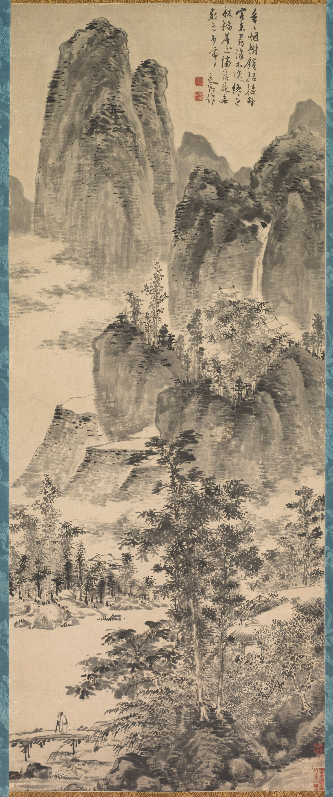

关于周屿
在杭州写 Rust 服务端的后端工程师，写了六年，还在一圈一圈地长。
- 在
- 浙江杭州
- GitHub
- @zhouyu（新窗口打开）

Silva 是什么
像树一样，走出自己的舒适区，慢慢地长，向外蔓延，然后变得结实。
它不是「森林」的意思，是我给自己的一个提醒：不求一下子长很高，只求每年都多长一圈。这里的每篇文章、每个项目，都是新长出的一圈；旧的那圈留着，不会被新的覆盖掉。
个人简介
我从一家物流公司的订单系统开始写后端。那几年学会的最重要一件事是：一份数据只能有一个可信来源。后来在内容平台负责发布链路，把「写好了」「审过了」「上线了」拆成三件互不干扰的事。
从 Go 换到 Rust，是我这几年离开舒适区最远的一次。头三个月几乎天天和借用检查器争论，后来慢慢发现，它挡住的大多是我本来就该想清楚的事。
现在主要关注这些方向：
- Rust 服务端与 PostgreSQL 的工程实践
- 静态优先的站点与可回放的构建流程
- AI 开源生态里的开发者工具与 MCP Server
写作对我来说是整理思路的方式。文章大多来自真实踩过的坑，我尽量把上下文和取舍讲清楚，而不是只给结论。
一年一圈
从 2020 年写第一行后端代码算起，每年一圈。点选下面的经历，看它占了哪几圈。
会的东西
熟练程度照我在后台写的原话，不换算成百分比。

语言
- Rust日常使用
- Go日常使用
- TypeScript熟悉
- SQL
后端与数据
- Axum 与 Tokio
- PostgreSQL
- Redis
- 消息队列与任务调度
前端
- Astro
- React
- Tailwind CSS
其他
- Docker 与持续集成
- 技术写作